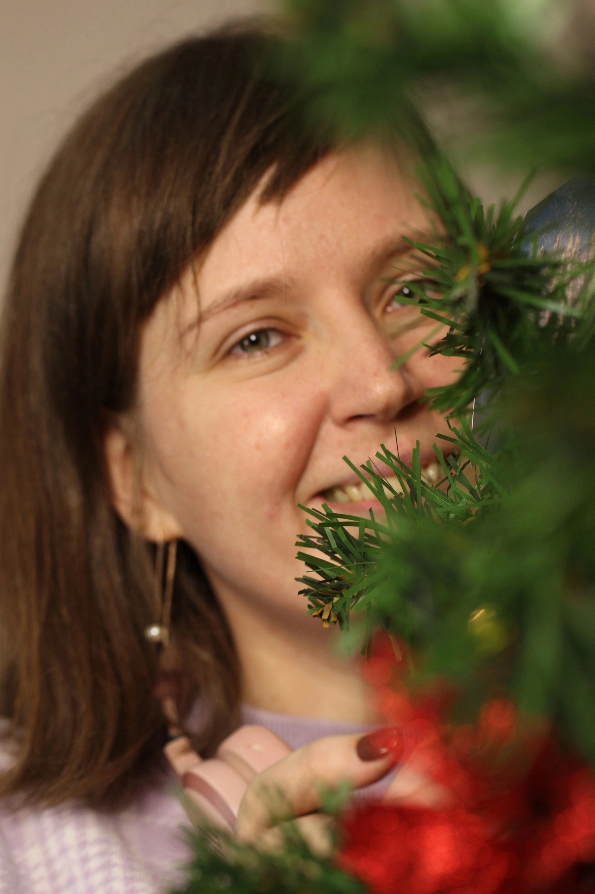

От идеи до экспозиции — путь каждой фотографии
Проект, посвящённый макромиру и концептуальной фотографии. Зрители увидели привычные вещи в новом свете, через призму деталей.
Выставка включала авторскую экскурсию и творческую встречу, где фотографии становились поводом для разговора.
Проект, рождённый в сотрудничестве с коллегой-фотографом. Цель — показать один и тот же город через разные взгляды.
Более 30 работ были представлены в пространствах библиотек Выборгского района Санкт-Петербурга.
Активное участие в жизни Санкт-Петербургского фотоклуба «Творческая фотомастерская». Обмен опытом, совместные выезды на съёмки и выставки.